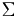
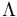

De: La Frikipedia, la enciclopedia extremadamente seria.
De: La Frikipedia, la enciclopedia extremadamente seria. De: La Frikipedia, la enciclopedia extremadamente seria.
Es lo que una bombilla apagada  tarda en pasar de un punto hasta un punto . ¿Que por qué esas letras? porque la oscuridad es aún más caprichosa que la luz, y si no la tratas bien, apagará los faros de tu coche cuando esté oscuro para que te estrelles. Es mucho más rápida que la velocidad de la luz, pues aunque la luz llega muy rápido a los sitios, la oscuridad ya estaba ahí. ¿Por qué corre más? por la mala leche, provocada por la relación que se suele hacer de ella con emos y góticos. Ten cuidado en los lugares oscuros, y que no te coja de frente la oscuridad.
La oscuridad empezó a moverse un día que loe llegó al vivo que la relacionarán con emos y góticos. Se picó tanto que empezó a correr muy rápido y sin ton ni son. Cada vez que se encontraba con alguien o algo lo abatía al instante. Comenzó a meterse en bandas zurra-emos. Llegaba en primer lugar a la pelea, y era el que más fácil podía escapar. Pero un día encarcelaron a la oscuridad en una bombilla apagada. No podía salir de ahí, y era muy pequeñita para arrojarse a los emos y zurrarles. Así que decidió acelerar el paso dentro de su celda-bombilla. Aveces, la bombilla se cae con la velocidad y se rompe, por lo que puede seguir zurrando emos de vez en cuando. Eso sí, la rabia contenida la hace muy peligrosa, y si te pilla te mata.
Siguiendo los pasos de Einstein que dicen “ si algún cuerpo mantiene una velocidad aproximada a la de la luz en su materia transcurren los segundos de forma mas lenta, por ejemplo un X material en lugar de descomponerse el cabo de 10 segundos, se descompondría al cabo de 30 si le aplicaras la constante de Einstein ” eso significa que si alguien viajara a una velocidad aproximada a la de la luz le pasarán los segundos lentos para su cuerpo mientras a la otra gente le hubieran pasado años. Eso significa que se podría viajar al futuro llegando a una velocidad aproximada a la de la luz o esa misma.
La luz anda a distinto paso si está en un medio o en otro, a saber...:
A los científicos se ve que les gusta las cosas oscuras, y han estado haciendo experimentos con la velocidad de la oscuridad:
Para este experimento necesitaremos:
Preparación del experimento:
Cogemos la bombilla apagada y le ponemos delante la foto del emo. La oscuridad se cabrea mucho y ataca a la foto. Mientras tanto, tu juegas al tute con el tal Ganas, que he oído que es buena gente (y te va a gustar jugar con él porque siempre Ganas)
Para este experimento necesitaremos
Preparación del experimento:
Tómese el fluorescente de neon e introdúzcase un freno de un camión. No funcionará, así que tendrás que meter uno a uno los otros cuatro. Se picará mucho mucho, y si ve a un emo lo matará al instante, por lo que NO SE RECOMIENDA HACER ESTE EXPERIMENTO EN ESTERIORES. Después coges las playtío y le das 2 a él y tú te quedas con las otras 498 (recuerda, si le das solamente una revista se cabreará y te matará como si fueras un vulgar emo. La cabeza en este experimento la puedes usar para hacer palomitas...
Para este experimento necesitaremos
Preparación del experimento:
Cójase la piedra e introdúzcase en la propia cabeza a presión mientras se bebe absenta y se encañona a sí mismo con una escopeta de repetición. La oscuridad empieza a retorcerse y curvarse, por ver tu emo-conversión, y además acelera su velocidad e incrementa su mala leche. No te vas a suicidar, la oscuridad te matará.
| | ||||
|
Materia
Magnitudes
Mecánica
Cinética y Dinámica
Energía
Óptica
Termodinámica
Física Cuántica y Nuclear
Científicos
|
Autor(es):